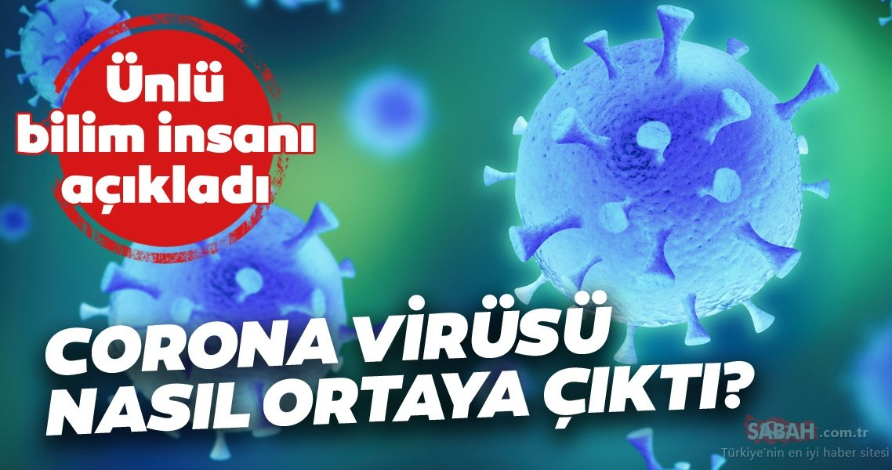
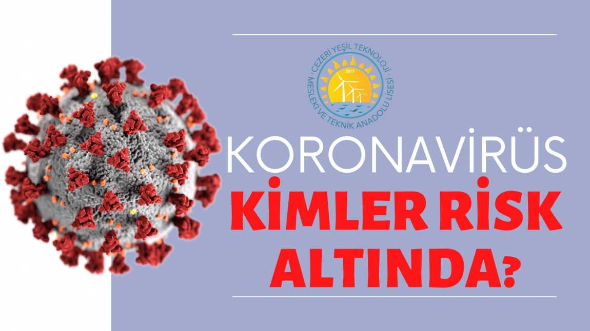

Corona virüsü nasıl ortaya çıktı sorusu, son günlerde en fazla araştırılan konular arasında yer aldı.
Hubei eyaletinde yer alan Wuhan şehrindeki “Huanan” isimli bir deniz ve et ürünleri pazarından kaynaklandığı düşünülen yeni virüsün, daha önceki yıllarda salgına neden olan SARS ve MERS gibi korona tipi virüs ailesine mensup olduğu belirtiliyor. SARS ve MERS’e göre daha hızlı yayılan mevcut koronavirüsün öldürücülüğü ise önceki virüs salgınlarına göre düşük. Uzmanlar söz konusu virüsün öldürücülük oranını yüzde 2.0 ile 3.1 arasında tahmin ediyorlar.Dünya genelinde Corona virüsü bulaşan kişi sayısı 119 bini aştı. Çin ana karasında 3 bin 158, Hong Kong Özel İdari Bölgesi'nde 3, İtalya'da 631, İran'da 291, Güney Kore'de 61, İspanya'da 36, Fransa'da 33, ABD'de 31, Japonya'da 19, Irak'ta 7, İngiltere'de 6, Hollanda'da 4, Avustralya'da 3, İsviçre'de 3, Almanya'da 2, San Marino'da 2, Kanada, Lübnan, Panama, Fas, Endonezya, Mısır, Tayland, Tayvan, Filipinler ve Arjantin'de birer kişi Corona virüsü nedeniyle hayatını kaybetti.
Bu hastalıklar çoğu insanda hafif seyrediyor. Fakat bazı koronavirüsler ciddi hastalıklara yol açıyor. Bunların başında 2003 yılında Çin'de ortaya çıkan SARS virüsü ve 2012 yılında Suudi Arabistan'da ortaya çıkan MERS virüsü geliyor. Koronavirüsler bazı hayvanlarda bulunup insanlara bulaşabiliyor. Virüsün insanlara bulaşması, virüsün mutasyonu veya hayvanlarla temas gibi birçok faktöre bağlı. Mesela MERS virüsünün develerden, SARS virüsünün misk kedilerinden bulaştığı biliniyor ancak yeni koronavirüsün hangi hayvandan insanlara geçtiği henüz saptanmış değil. COVID-19, hasta kişilerin öksürme, hapşırma veya konuşmayla ortaya saçtığı damlacıkların ortamdaki diğer bireyler tarafından solunması, damlacıkların yapıştığı yüzeylere dokunduktan sonra ellerin ağız, burun veya göze götürülmesiyle bulaşır.

Risk altında bulunan kişiler hayvanlarla yakın temasta bulunanlar, hasta kişilerin aile üyeleri ve sağlık çalışanları. Hijyen kurallarına uyulması, hastalıktan korunma ve hastalığı bulaştırmamak açısından önemli. Hijyen kuralları içinde öksürme veya hapşırma sırasında ağız ve burnun tek kullanımlık mendille kapatılması, mendil yoksa dirseğin iç kısmı kullanılması, ellerin sık sık su ve sabunla yıkanması, su ve sabun yoksa alkol içerikli el dezenfektanları kullanılması, hayvanlarla temastan sonra ellerin yıkanması, hayvansal ürünlerin tüketilmeden önce pişirilmesi ve kirli ellerle ağız, burun ve göze dokunulmaması yer alıyor.Ağır hasta olma tehlikesi veya hatta enfeksiyondan ölme tehlikesi aşağıdaki insan grupları için yüksektir: · Yaşlılar: bu risk aşağı yukarı 60 yaşında başlar ve ilerleyen yaşla birlikte artar. · Temel rahatsızlıkları bulunanlar. Örneğin: o yüksek tansiyon, o şeker hastalığı, o akciğer hastalıkları (örneğin KOAH), o kanser hastalıkları, o bağışıklık sistemi zayıf olanlar, o başka türden tıbbi temelli özel bağışıklık sistemi zayıflığı bulunanlar. · Bir temel hastalığı bulunanlar özellikle risk altındadır.